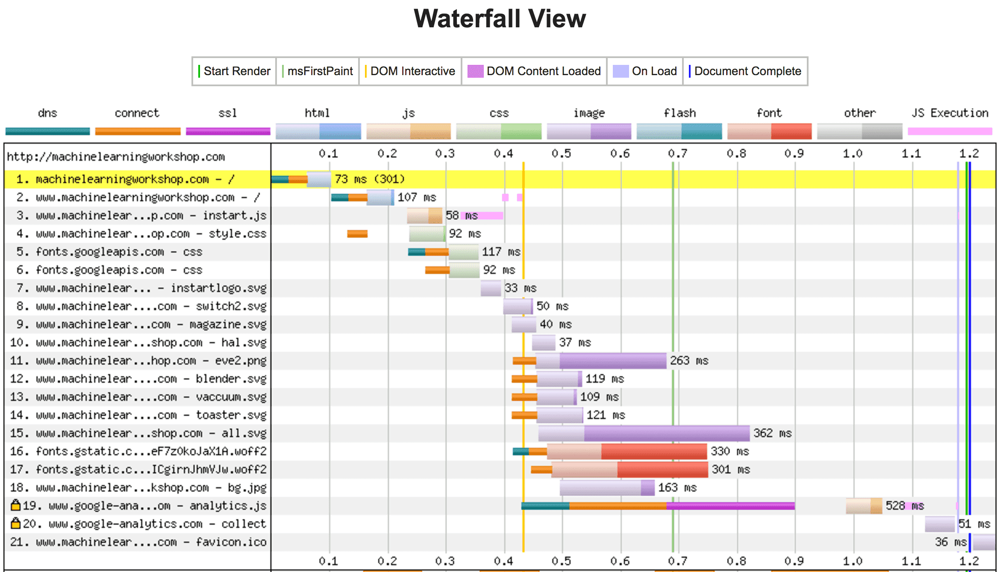

| Phone |
Cost |
RAM |
ROM |
CPU |
| Samsung GALAXY S7 |
$670 |
4 GB |
32 - 64 GB |
1.6 GHz |
| Apple iPhone 6s |
$600 |
1 GB |
32 - 128 GB |
1.8 GHz |
| LG G5 |
$550 |
4 GB |
32 GB |
2.5 GHz |
| Huawei Nexus 6P |
$550 |
3 GB |
32 - 128 GB |
2.0 GHz |
| Samsung Galaxy Note 5 |
$700 |
4 GB |
32 - 64 GB |
2.1 GHz |
| Sony Xperia |
$600 |
2 GB |
16 GB |
1.5 - 2.0 GHz |
| Samsung Galaxy S6 |
$785 |
3 GB |
32 - 128 GB |
2.1 GHz |
| LG Nexus 5X |
$580 |
2 GB |
32 GB |
1.8 GHz |
| Moto X Pure Edition |
$299 |
3 GB |
16 - 64 GB |
1.8 - 2.5 GHz |
| Xiaomi Redmi Note 3 |
$180 |
2 - 3 GB |
16 - 32 GB |
2X1.8 GHz |
Wireless Coverage in Emerging Markets
| Phone |
Cost |
RAM |
ROM |
CPU |
| Nokia Asha 200 |
$27 |
32 MB |
10 - 64 MB |
FF |
| Nokia Asha 210 |
$27 |
32 MB |
64 MB |
FF |
| Nokia X2-01 |
$9 |
64 MB |
55 MB |
FF |
| Nokia C3-00 |
$45 |
64 MB |
55 MB |
FF |
| TECNO P5 |
$42 |
512 MB |
4 GB |
1.0 GHz |
| Nokia Asha 205 |
$27 |
|
64 MB |
FF |
| Nokia Asha 201 |
|
10 - 32 MB |
64 MB |
FF |
| TECNO M3 |
$41 |
512 MB |
4 GB |
1.0 GHz |
| Infinix Hot Note X551 |
$142 |
1 GB |
16 GB |
1.4 GHz |
| Infinix Hot 2 X510 |
$112 |
1 - 2 GB |
16 GB |
1.3 GHz |
FF = Feature Phone
Java with WAP 2.0/xHTML.
Opera/UC Browser
Browser shares available memory
| Running Services |
| Other | 73MB Avail: 255MB + 182MB in 21 |
| Calendar | 8.4MB |
| Process:com.htc.bgp |
| ObexService | 31:52:14 |
| Started by application: Touch to stop |
| AT&T Navigator | 8.4MB |
| Process: com.telnav.app.android.congular |
| ResoucePreLoader | Restarting |
| Started by application: Touch to stop |
| AT&T Spots | 2.4MB |
| Process: com.matchboxmobile.wasp |
| WispService | 31:52:14 |
| Started by application: Touch to stop |
| Media | 4.1MB |
| Process: android.process.media |
| DownloadService | 31:52:14 |
| Started by application: Touch to stop |
| PVWmdrmService | 2.2MB |
| Process: com.pv.wmdrmservice |
| PVWmdrmService | 31:52:14 |
| Started by application: Touch to stop |
Android Device Fragmentation (2015)
Device Sizes & Aspect Ratios (2015)
Dev Environments ≠ Mobile Experience
Mobile Performance Concerns
- Download
- # of resources: images, fonts, HTML, scripts, and CSS loaded
- Parse
- File size of above resources
- Execute
- Parsing & Painting
- Perceived Performance
- User perception of load speed and reaction time.(study)
Device Considerations - Phones aren't Laptops
- Very powerful browsers
- Less powerful CPUs
- Not plugged In
- Metered data
- Tiny Screens
- Different Interactions
(Touch / Keyboard / Mouse)
- Battery
- Latency
- Memory
- Responsiveness
- # of HTTP Requests
- # of Bytes
- Images, Animations, Interactions
- Squishiness
- Responsiveness
- Network (latency, bandwidth)
- Hardware (processing power)
- Browser (blocking, features)
While we control how we build the site, we don't have control over ...
What's involved in a page load?
- HTTP request
- DNS lookup
- TCP Connect
- HTTP request sent
- Server Magic
- Server Sends response
- Browser receives/parses response
- Resources fetched from Cache
- Parse & Execute Scripts
- Render Site
- Each request: go back to DNS lookup or HTTP Request
- Stylesheets are blocking
- Scripts are blocking.
Navigation Timing API metrics
TTFB = Latency + Server Time
Limit # of handshakes & bandwidth req

TTFB = Latency + Server Time
Limit # of handshakes & bandwidth req
- # of HTTP Requests
- # of Bytes
- Images, Animations, Interactions
- Squishiness
- Responsiveness
- Network (latency, bandwidth)
- Hardware (processing power)
- Browser (blocking, features)
- YSlow
- PageSpeed
- WebPageTest
- Developer Tools
- Lighthouse
- Minimize Requests
- Reduce DNS lookups
- Avoid Redirects
- Cache Headers
- Only load needed resources
- Minimize size & optimize media
- Put CSS in the <head>
- Put JS at the bottom
- Don't scale images in HTML
- Concatenate, Minify, Refactor
- Don't block the UI thread
- Use HTTP/2
- Use a CDN
- Use SSL
- Use AMP
- Offer Progressive Web Apps
- Develop Mobile first
- Minimize the number of DOM nodes
- Avoid reflows and repaints
- Use the right input type
- Configure the viewport
- Make the site squishy
- Ensure legibility
- Serve the right size images
- Effective content strategy
- Create a performance budget and stick to it
- etc.
- Minimize request size
- GZip all requests.
- Leverage browser caching.
- Include caching headers for all requests with a future date so previously fetched responses can be reused instead of refetched.
- Specify a cache validator
- Specify a
Last-Modified or ETag header to enable cache validation. ETags provide revalidation tokens automatically sent by client to check if there are file changes since last requested.
- Minify CSS, JS & HTML
- Removing unnecessary whitespace saves bandwidth
- Defer parsing of JavaScript
- include
async attribute in your <script> tags so client can continue downloading assets instead of waiting as scripts are downloaded, parsed and excecuted.
- Optimize images
- Choose best format and compression on a per image basis include: type of data being encoded, image format capabilities, quality settings, resolution, and more. Leverage SVG and CSS. See previous page.
- Specify a character set
- Including a content-type header, such as
Content-Type: text/html; charset=UTF-8 reduces browser processing. Can start parsing HTML immediately when it knows which character set it has.
- Remove query strings from static resources
- Resources with a "?" in the URL are not cached by some proxy caching servers
- Specify a Vary: Accept-Encoding header
- In case client doesn't support compression, tells proxy server to store both compressed and uncompressed versions.
- Avoid CSS @import
- Only starts downing imported file once encountered rather than in parallel.
- Avoid a character set in the meta tag
- Better to include it in HTTP Content-Type header (IE8 rule)
- Avoid bad requests
- 404 and 410 errors waste time. If requests are for blocking resources, it becomes a more serious problem.
- Avoid landing page redirects
- If your site requires redirects, do them server-side not client side, to reduce round trip requests. Removing HTTP redirects removes extra round trips.
- Combine images into CSS sprites
- Enable Keep-Alive
- HTTP persistent connections allows a TCP connection to send and receive multiple HTTP requests, reducing latency for subsequent requests.
- Enable compression
- GZip!
- Inline Small CSS & JS
- Minimize redirects
- Minimizing redirects removes additional RTTs and wait time for users.
- Optimize the order of styles and scripts
- Prefer asynchronous resources
- Many JS libraries and frameworks were originally written as synchronous scripts, but now have asynchronous versions. Use the asynchronous versions.
- Put CSS in the document head
- Serve resources from a consistent URL
- Serve scaled images
- Properly sized images saves bandwidth.
- Specify image dimensions
- Enables rendering page before images are downloaded. Without proper dimensions, browser will need to reflow and repaint upon image downloaded.
Page Speed
- Avoid plugins
- Configure the viewport
- Optimize pages to display well on mobile devices by including a meta viewport in the head of the document specifying
width=device-width, initial-scale=1.
<meta name=viewport content="width=device-width, initial-scale=1">
- Size content to viewport
- Scrolling websites vertically is Okay, but horizontally creates poor user experience. Use media queries and
vh, vw and percents for width.
- Size tap targets appropriately
- Set a minimum tap target size of of 48 CSS pixels on a site with a properly-set mobile viewport. Make important tap targets large enough to be easy to press, ensuring there is extra spacing between smaller tap targets.
- Use legible font sizes
Page Speed Insights
- GZip
- Remove Image Metadata
- Resize Images
- Optimize Images
- Use the Right Image Format
- Reduce the Number of Images
My Tips & Deep Dive
Note: Include an alt attribute on all foreground images, with empty alt attribute for decorative images.
#1: Configure the Viewport
<meta name="viewport"
content="width=device-width, ...">
| width | width of device's virtual viewport. |
| device-width | width of the device's screen. |
|
height | height of device's virtual viewport |
| device-height | height of the device's screen.
|
| initial-scale | Initial zoom on page visit. default 1.0. |
| minimum-scale | If user scalable, as small as it can zoom on the page. |
| maximum-scale | If user scalable, maximum amount visitor can zoom on the page. |
| user-scalable | Can the web zoom in and out. Values are yes or no. |
Don't be a jerk like GMail
<meta name="viewport"
content="initial-scale=1.0,
maximum-scale=1.0,
minimum-scale=1.0,
user-scalable=no,
width=device-width">

- GZip
- Remove Image Metadata
- Resize Images
- Optimize Images
- Use the Right Image Format
- Reduce the Number of Images
- Leverage CSS
- Resize Images
Serve the smallest image file for the screen size and resolution.
Right Size Your Images: Unneeded pixels
240 x 240 = 57,600
200 x 200 = 40,000
17,600

440 x 440 = 193,600
400 x 400 = 160,000
33,600
640 x 640 = 409,600
600 x 600 = 360,000
49,000
840 x 840 = 705,600
800 x 800 = 640,000
65,600
CloudFour: image breakpoints
Scaled: 1,850 milliseconds

Right-sized: 625 milliseconds
 blue = CPU used to decode
blue = CPU used to decode
green = FPS (more is better)
purple = rendering
PhysicsOfFast
#2, sect. 3, part B
<picture>, <source> & srcset
<picture>
<source srcset="large.jpg"
media="(min-width: 1000px)">
<source srcset="small.jpg"
media="(min-width: 500px)">
<img src="default.jpg"
srcset="highresolution.jpg 2x"
alt="do not forget the alt">
</picture>
-
Use the Right Image Format
Image types include SVG, GIF, JPEG, PNG, and WebP.
- GIF: <= 256 color pallette, need transparency and/prlow quality animation
- SVG: scalable, animatable, unlimited color pallette
- PNG: > 256 colors if transparency needed.
- JPEG: raster images
- WebP: Animation, transparency, great resolution, small file size. Blink only.
- JPEG-XR: For Edge
|
Browser
|
Optimal image format
|
|
Chrome
|
WebP
|
|
IE 9+ / Edge
|
JPEG-XR
|
|
Opera
|
WebP
|
|
Safari
|
JPEG-2000
|
You don't have to change the file extension.
- Reduce the Number of Images
-
Sprites
- Just fewer images
- Leverage CSS
- Image Masking. (article)
- CSS Effects: gradients, borders, rounded corners, shadows, etc.
- Sprites: especially without HTTP/2
- CSS Filters
- Media Queries serve hi-res images to hi-res devices
- Animation: steps() as alternative to animated gifs.
- Leave out prefixed property/values
<!DOCTYPE HTML>
<html>
<head>
<meta charset="UTF-8">
<title>Titles are good for SEO</title>
<link rel="stylesheet" href="prettyWhenItLoads.css"/>
</head>
<body>
<!-- lots of good content -->
<script src="dontBlockHTMLandCSS.js"></script>
</body>
</html>
JavaScript
- Render cost: JS (and CSS and images)
- JS (download, parsing & executing)
- Dynamic JS: ⬆ rendering cost (can't be cached).
- AJAX: waking up the radio communications
- All scripts loaded and parsed (even if not used)
- Reduce JS to only what is needed
- Don't let 3rd party scripts be your SPOF
- Are libraries really necessary?
- Include only functions used by page to reduce
energy use.
- Goal of most libraries is equalize across browsers
(not necessry in mobile space)
- Libraries simplify web
development, but increase energy use.
- You don't need a framework for that
CPU Drains the battery. Avoid using it!
- Avoid Reflows & Repaints
- Minimize JavaScript (size and activity)
- Avoid JavaScript Animations (
requestAnimationFrame())
- Avoid WebGL (or otherwise warming up the phone)
- Let the radio idle
- Implement what you learn today
Let your device take long, long breaks!
- Minimize number of nodes
- Uses up memory & time
- Measures each node for each repaint
- Cache DOM lookups
- Minimize DOM manipulations
- Batch DOM queries & DOM manipulations separately
More nodes = more expensive!
Disney Went "Mobile"
|
Wide / Desktop |
Narrow / Mobile |
| Requests |
77 |
123 |
| Assets |
3752kB |
3344kB |
| Load |
10.62s |
34.10s |
| DOMContentLoaded |
9.74s |
30.94s |
|
desktop stats |
mobile stats |
Build with Accessibility in Mind
Build with Mobile in mind
- Works offline, online & on Lie-Fi
- App like
- Installable: add to home screen
- Works as web page too
- Responsive
- Progressively Enhancement
- Secure: HTTPS
- Manifest
- Service Workers
AMP: Accelerated Mobile Pages
Test in Real Environments
- Test on Phone:
- Simulator != Emulator
- Cap your memory
- Test with many apps open
- Test on multiple devices
- Test on mobile network
Test during development
Set a budget before you start
- Scale down (not up)
- Don't use prefixed property fallbacks
- Take advantage of HTML5 & native storage
- Don't disable zoom (except for games)
- Follow performance recommendations
- Minimize Latency
- Manage memory
- Use CSS Judiciously
- Use JS Minimally (and NOT for animation)
- Batch query and manipulations separately
- Reuse the DOM
- Keep Mobile in Mind
Your users may
not be tethered,
their memory may be limited,
and their bandwidth may be
unreliable and metered.
{kind=link}